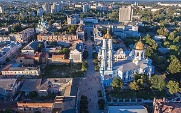

Місце народження: 14 травня 2005 року місто Суми, Україна
Освіта: КУССШ 1 ім.В.Стрельченка,
КПІ ім. Ігоря Сікорського
Мої хобі:
Улюблені книги:
Моє улюблене місто – це моє рідне місто, мої Суми. Це місце, сповнене тиші (на жаль, з росіянами часто тепер буває гучно), затишку, теплоти та любові.
До повномасштабної війни я не цінувала мій край, проте згодом, коли ледь не втратила, почала сильно цінувати. А також дізнаватися про нього: ходити на екскурсії містом, читати історію. І виявилося, що мої Суми мають багату історію, велику кількість історичних пам'яток, цікавих місць, а також обвіяне легендами. Я люблю і пишаюся своїми Сумами.
